Giới thiệu về các tính năng hoạt ảnh
Node class_AnimationPlayer cho phép bạn tạo mọi loại hoạt ảnh, từ đơn giản đến phức tạp.
Trong hướng dẫn này, bạn sẽ học cách:
Làm việc với Animation Panel
Tạo hoạt ảnh cho bất kỳ thuộc tính nào của bất kỳ node nào
Tạo một hoạt ảnh đơn giản
Trong Godot, bạn có thể tạo hoạt ảnh cho mọi thứ có trong Inspector, chẳng hạn transform của Node, sprite, phần tử UI, hạt (particle), khả năng hiển thị và màu của material, v.v. Bạn cũng có thể thay đổi giá trị của các biến trong script và thậm chí gọi hàm.
Tạo node AnimationPlayer
Để dùng các công cụ hoạt ảnh, trước tiên chúng ta phải tạo một node class_AnimationPlayer.
Kiểu node AnimationPlayer là nơi chứa dữ liệu cho các hoạt ảnh của bạn. Một node AnimationPlayer có thể chứa nhiều hoạt ảnh, và chúng có thể tự động chuyển tiếp sang nhau.
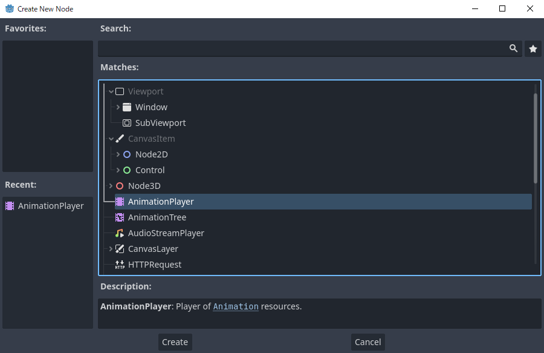
Node AnimationPlayer
Sau khi tạo node AnimationPlayer, hãy nhấp vào nó để mở Animation Panel ở phía dưới viewport.

Vị trí của bảng hoạt ảnh
Bảng hoạt ảnh gồm bốn phần:

Bảng hoạt ảnh
Các điều khiển hoạt ảnh (tức là thêm, tải, lưu và xóa hoạt ảnh)
Danh sách track
Timeline với các keyframe
Các điều khiển timeline và track, chẳng hạn nơi bạn có thể phóng to timeline và chỉnh sửa track.
Hoạt ảnh máy tính dựa trên keyframe
Một keyframe xác định giá trị của một thuộc tính tại một thời điểm.
Các hình thoi biểu diễn keyframe trên timeline. Một đường nối giữa hai keyframe cho biết giá trị không thay đổi giữa chúng.

Keyframe trong Godot
Bạn đặt giá trị cho các thuộc tính của node và tạo keyframe hoạt ảnh cho chúng. Khi hoạt ảnh chạy, engine sẽ nội suy giá trị giữa các keyframe, khiến chúng thay đổi dần theo thời gian.

Chỉ cần hai keyframe là có được chuyển động mượt mà
Timeline xác định hoạt ảnh kéo dài bao lâu. Bạn có thể chèn keyframe ở nhiều thời điểm khác nhau và thay đổi thời điểm của chúng.

Timeline trong bảng hoạt ảnh
Mỗi dòng trong Animation Panel là một track hoạt ảnh tham chiếu đến một thuộc tính Normal hoặc Transform của node. Mỗi track lưu đường dẫn đến một node và thuộc tính bị ảnh hưởng của nó. Ví dụ, track vị trí trong hình minh họa tham chiếu đến thuộc tính position của node Sprite2D.
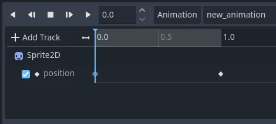
Ví dụ về các track hoạt ảnh Normal
Mẹo
Nếu tạo hoạt ảnh nhầm thuộc tính, bạn có thể sửa đường dẫn của track bất cứ lúc nào bằng cách nhấp đúp vào nó và nhập đường dẫn mới. Phát hoạt ảnh bằng nút "Play from beginning"  (hoặc nhấn Shift + D trên bàn phím) để thấy thay đổi ngay lập tức.
(hoặc nhấn Shift + D trên bàn phím) để thấy thay đổi ngay lập tức.
Bài hướng dẫn: Tạo một hoạt ảnh đơn giản
Thiết lập scene
Trong bài hướng dẫn này, chúng ta sẽ tạo một node Sprite với một AnimationPlayer làm node con. Chúng ta sẽ tạo hoạt ảnh để sprite di chuyển giữa hai điểm trên màn hình.
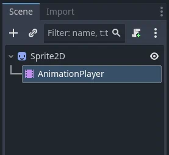
Thiết lập scene
Cảnh báo
AnimationPlayer kế thừa từ Node thay vì Node2D hay Node3D, nghĩa là các node con sẽ không kế thừa transform từ các node cha do có một Node thuần nằm trong hệ phân cấp.
Vì vậy, không nên thêm các node có transform 2D/3D làm con của node AnimationPlayer.
Sprite chứa một texture hình ảnh. Trong bài hướng dẫn này, hãy chọn node Sprite2D, nhấp Texture trong Inspector, rồi nhấp Load. Chọn biểu tượng Godot mặc định làm texture cho sprite.
Thêm hoạt ảnh
Chọn node AnimationPlayer và nhấp nút "Animation" trong trình chỉnh sửa hoạt ảnh. Từ danh sách, chọn "New" ( ) để thêm hoạt ảnh mới. Nhập tên cho hoạt ảnh trong hộp thoại.
) để thêm hoạt ảnh mới. Nhập tên cho hoạt ảnh trong hộp thoại.
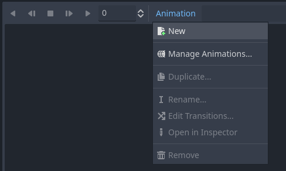
Thêm hoạt ảnh mới
Quản lý thư viện hoạt ảnh
Để có thể tái sử dụng, hoạt ảnh được đăng ký vào một danh sách trong resource thư viện hoạt ảnh. Nếu bạn thêm hoạt ảnh vào AnimationPlayer mà không chỉ định cài đặt cụ thể nào, hoạt ảnh sẽ được đăng ký vào thư viện hoạt ảnh [Global] mà AnimationPlayer có sẵn theo mặc định.
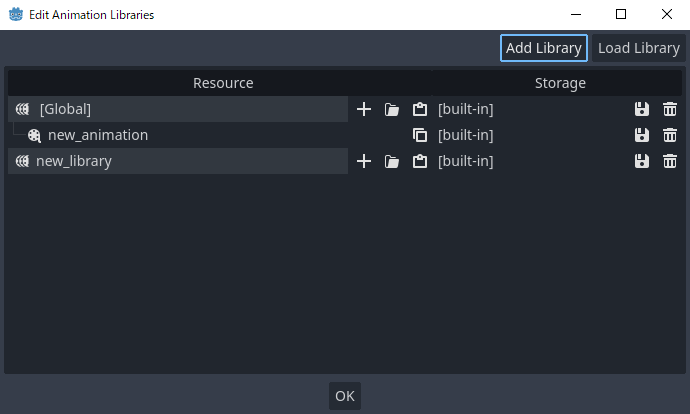
Quản lý hoạt ảnh
Nếu có nhiều thư viện hoạt ảnh và bạn thử thêm một hoạt ảnh, một hộp thoại với các tùy chọn sẽ xuất hiện.

Thêm hoạt ảnh mới với tùy chọn thư viện
Thêm track
Để thêm một track mới cho sprite, hãy chọn nó và nhìn vào thanh công cụ:

Các nút tiện ích
Các công tắc và nút này cho phép bạn thêm keyframe cho vị trí, phép xoay và tỷ lệ của node đang chọn. Vì chúng ta chỉ tạo hoạt ảnh cho vị trí của sprite, hãy đảm bảo chỉ công tắc vị trí được chọn. Các công tắc được chọn có màu xanh.
Nhấp vào nút key để tạo keyframe đầu tiên. Vì chưa có track nào được thiết lập cho thuộc tính Position, Godot sẽ đề nghị tạo nó cho chúng ta. Nhấp Create.
Godot sẽ tạo một track mới và chèn keyframe đầu tiên vào đầu timeline:

Track của sprite
Keyframe thứ hai
Chúng ta cần đặt vị trí kết thúc của sprite và thời gian để nó đến đó.
Giả sử chúng ta muốn sprite mất hai giây để di chuyển giữa hai điểm. Mặc định, hoạt ảnh chỉ kéo dài một giây, vì vậy hãy đổi độ dài hoạt ảnh thành 2 trong phần điều khiển ở bên phải đầu timeline của bảng hoạt ảnh.
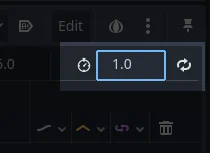
Độ dài hoạt ảnh
Bây giờ, di chuyển sprite sang phải, đến vị trí cuối cùng. Bạn có thể dùng Move tool trên thanh công cụ hoặc đặt giá trị X của Position trong Inspector.
Nhấp vào đầu timeline gần mốc hai giây trong bảng hoạt ảnh, rồi nhấp nút key trên thanh công cụ để tạo keyframe thứ hai.
Chạy hoạt ảnh
Nhấp vào nút "Play from beginning" ().
Tuyệt! Hoạt ảnh của chúng ta đã chạy:

Hoạt ảnh
Tự động phát khi tải
Bạn có thể làm cho một hoạt ảnh tự động phát khi scene của node AnimationPlayer bắt đầu, hoặc khi nó tham gia vào một scene khác. Để làm vậy, hãy nhấp nút "Autoplay on load" trong trình chỉnh sửa hoạt ảnh, nằm ngay cạnh nút edit.
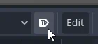
Biểu tượng của nó cũng sẽ xuất hiện trước tên hoạt ảnh, giúp bạn dễ dàng nhận biết hoạt ảnh nào là hoạt ảnh tự động phát.
Qua lại
Godot có một tính năng thú vị mà chúng ta có thể dùng trong hoạt ảnh. Khi Animation Looping được bật nhưng không có keyframe nào ở cuối hoạt ảnh, keyframe đầu tiên cũng chính là keyframe cuối cùng.
Điều này có nghĩa là giờ chúng ta có thể kéo dài hoạt ảnh lên bốn giây, và Godot cũng sẽ tính các khung hình từ keyframe cuối về keyframe đầu, khiến sprite di chuyển qua lại.
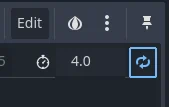
Vòng lặp hoạt ảnh
Bạn có thể thay đổi hành vi này bằng cách đổi chế độ lặp của track. Nội dung này được trình bày trong chương tiếp theo.
Cài đặt track
Mỗi property track có một bảng cài đặt ở cuối, nơi bạn có thể đặt chế độ cập nhật, kiểu nội suy và chế độ lặp của track.
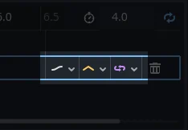
Cài đặt track
Chế độ cập nhật của track cho Godot biết khi nào cần cập nhật giá trị thuộc tính. Có thể là:
Continuous: Cập nhật thuộc tính ở mỗi khung hình
Discrete: Chỉ cập nhật thuộc tính tại các keyframe
Capture: nếu thời điểm của keyframe đầu tiên lớn hơn
0.0, giá trị hiện tại của thuộc tính sẽ được ghi nhớ và pha trộn với key hoạt ảnh đầu tiên. Ví dụ, bạn có thể dùng chế độ Capture để di chuyển một node đang ở bất kỳ đâu đến một vị trí cụ thể.
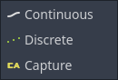
Chế độ track
Thông thường bạn sẽ dùng chế độ "Continuous". Các kiểu khác được dùng để viết script cho các hoạt ảnh phức tạp.
Kiểu nội suy của track cho Godot biết cách tính giá trị khung hình giữa các keyframe. Các chế độ nội suy sau được hỗ trợ:
Nearest: Đặt giá trị của keyframe gần nhất
Linear: Đặt giá trị dựa trên phép tính hàm tuyến tính giữa hai keyframe
Cubic: Đặt giá trị dựa trên phép tính hàm bậc ba giữa hai keyframe
Linear Angle (Chỉ xuất hiện ở thuộc tính xoay): Chế độ Linear với phép xoay theo đường ngắn nhất
Cubic Angle (Chỉ xuất hiện ở thuộc tính xoay): Chế độ Cubic với phép xoay theo đường ngắn nhất

Nội suy track
Với nội suy Cubic, hoạt ảnh chậm hơn tại các keyframe và nhanh hơn giữa chúng, tạo ra chuyển động tự nhiên hơn. Nội suy Cubic thường được dùng cho hoạt ảnh nhân vật. Nội suy Linear tạo hoạt ảnh thay đổi với tốc độ cố định, cho hiệu ứng giống robot hơn.
Godot hỗ trợ hai chế độ lặp, ảnh hưởng đến hoạt ảnh khi nó được đặt để lặp lại:

Các chế độ lặp
Clamp loop interpolation: Khi chọn chế độ này, hoạt ảnh dừng lại sau keyframe cuối cùng của track. Khi đến lại keyframe đầu tiên, hoạt ảnh sẽ đặt lại về các giá trị của nó.
Wrap loop interpolation: Khi chọn chế độ này, Godot tính toán hoạt ảnh sau keyframe cuối cùng để quay lại các giá trị của keyframe đầu tiên.
Keyframe cho các thuộc tính khác
Hệ thống hoạt ảnh của Godot không giới hạn ở vị trí, phép xoay và tỷ lệ. Bạn có thể tạo hoạt ảnh cho bất kỳ thuộc tính nào.
Nếu bạn chọn sprite khi bảng hoạt ảnh đang hiển thị, Godot sẽ hiển thị một nút keyframe nhỏ trong Inspector cho từng thuộc tính của sprite. Nhấp vào một trong các nút này để thêm track và keyframe vào hoạt ảnh hiện tại.

Keyframe cho các thuộc tính khác
Chỉnh sửa keyframe
Bạn có thể nhấp vào một keyframe trên timeline hoạt ảnh để hiển thị và chỉnh sửa giá trị của nó trong Inspector.

Trình chỉnh sửa keyframe đang chỉnh sửa một key
Tại đây bạn cũng có thể chỉnh giá trị easing của keyframe bằng cách nhấp và kéo đường cong easing của nó. Giá trị này cho Godot biết cách nội suy thuộc tính được tạo hoạt ảnh khi đến keyframe này.
Bạn có thể tinh chỉnh hoạt ảnh theo cách này cho đến khi chuyển động "trông ổn".
Dùng track RESET
Bạn có thể thiết lập một hoạt ảnh RESET đặc biệt để chứa "tư thế mặc định". Hoạt ảnh này được dùng để đảm bảo tư thế mặc định được khôi phục khi bạn lưu scene và mở lại trong trình chỉnh sửa.
Với các track hiện có, bạn có thể thêm một hoạt ảnh tên "RESET" (phân biệt chữ hoa chữ thường), rồi thêm track cho mỗi thuộc tính bạn muốn đặt lại. Keyframe duy nhất nên nằm ở thời điểm 0, và hãy đặt giá trị mặc định mong muốn cho từng track.
Nếu thuộc tính Reset On Save của AnimationPlayer được đặt là true, scene sẽ được lưu với hiệu ứng của hoạt ảnh reset đã được áp dụng (như thể nó đã được tua về thời điểm 0.0). Điều này chỉ ảnh hưởng đến file được lưu – các property track trong trình chỉnh sửa vẫn giữ nguyên.
Nếu muốn đặt lại các track trong trình chỉnh sửa, hãy chọn node AnimationPlayer, mở bảng dưới Animation rồi chọn Apply Reset trong menu thả xuống Edit của trình chỉnh sửa hoạt ảnh.
Khi dùng biểu tượng keyframe bên cạnh một thuộc tính trong inspector, trình chỉnh sửa sẽ hỏi bạn có muốn tự động tạo track RESET không.
Ghi chú
Track RESET cũng được dùng làm giá trị tham chiếu cho việc pha trộn. Xem thêm Để pha trộn tốt hơn.
Onion Skinning
Trình chỉnh sửa hoạt ảnh của Godot cho phép bạn dùng onion skinning khi tạo hoạt ảnh. Để bật tính năng này, nhấp vào biểu tượng củ hành ở góc trên bên phải của trình chỉnh sửa hoạt ảnh. Giờ sẽ có các bản sao màu đỏ trong suốt của đối tượng đang được tạo hoạt ảnh tại các vị trí trước đó của nó trong hoạt ảnh.

Nút ba chấm cạnh nút onion skinning mở một menu thả xuống cho phép bạn điều chỉnh cách nó hoạt động, bao gồm khả năng dùng onion skinning cho các khung hình tiếp theo.
Animation Marker
Animation marker có thể dùng để phát một phần cụ thể của hoạt ảnh thay vì toàn bộ. Đây là một ví dụ: có một file hoạt ảnh mà nhân vật thực hiện hai hành động riêng biệt, và dự án cần cả toàn bộ hoạt ảnh lẫn từng hành động riêng lẻ. Thay vì tạo thêm hai hoạt ảnh, bạn có thể đặt marker trên timeline, và giờ cả hai hành động đều có thể được phát riêng.
Để thêm marker vào hoạt ảnh, nhấp chuột phải vào khoảng trống phía trên timeline và chọn Insert Marker....

Mọi marker đều cần một tên duy nhất trong hoạt ảnh. Bạn cũng có thể đặt màu cho marker để dễ sắp xếp hơn.
Để phát phần hoạt ảnh giữa hai marker, hãy dùng các phương thức play_section_with_markers() và play_section_with_markers_backwards(). Nếu không chỉ định marker bắt đầu thì đầu hoạt ảnh sẽ được dùng, và nếu không chỉ định marker kết thúc thì cuối hoạt ảnh sẽ được dùng.
Nếu marker kết thúc nằm sau điểm kết thúc của hoạt ảnh thì AnimationPlayer sẽ giới hạn điểm kết thúc của đoạn để nó không vượt quá cuối hoạt ảnh.
Để xem trước hoạt ảnh giữa hai marker, dùng Shift + Click để chọn các marker. Khi đã chọn hai marker, khoảng giữa chúng sẽ được tô sáng màu đỏ.
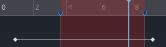
Giờ tất cả các nút phát hoạt ảnh sẽ hoạt động như thể vùng được chọn là toàn bộ hoạt ảnh. Play Animation from Start sẽ coi marker đầu tiên là điểm bắt đầu của hoạt ảnh, Play Animation Backwards from End sẽ coi marker thứ hai là điểm kết thúc, v.v.